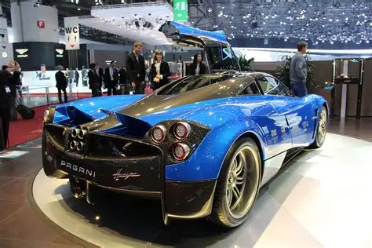
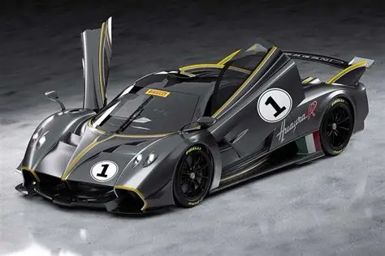
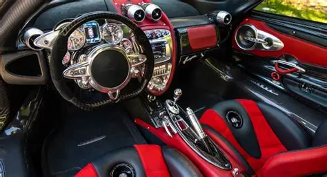

Origen
El Pagani Huayra fue presentado oficialmente en 2011 como el sucesor del Pagani Zonda. El automóvil fue desarrollado por Pagani Automobili, una empresa italiana fundada por Horacio Pagani.


Desarrollo
El desarrollo del Huayra tomó varios años y se enfocó en conseguir un equilibrio entre potencia, bajo peso y aerodinámica. Pagani utilizó materiales avanzados para conseguir una estructura ligera y resistente.
Legado
El Huayra se convirtió en uno de los modelos más reconocidos de Pagani. Su diseño, fabricación artesanal y tecnología lo hicieron destacar dentro del mundo de los automóviles deportivos y de lujo.

Justificación
Investigar la historia del Pagani Huayra permite conocer cómo la ingeniería, el diseño y la fabricación artesanal pueden combinarse para desarrollar un automóvil de altas prestaciones. También permite conocer el trabajo de Pagani y la evolución de sus automóviles.